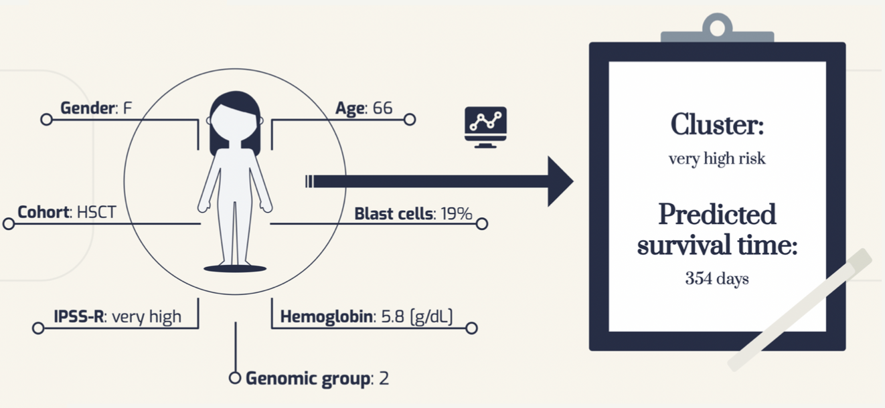
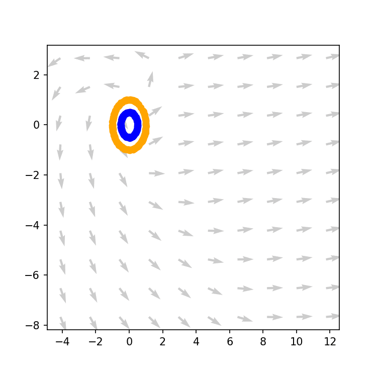
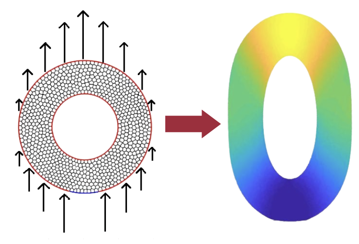
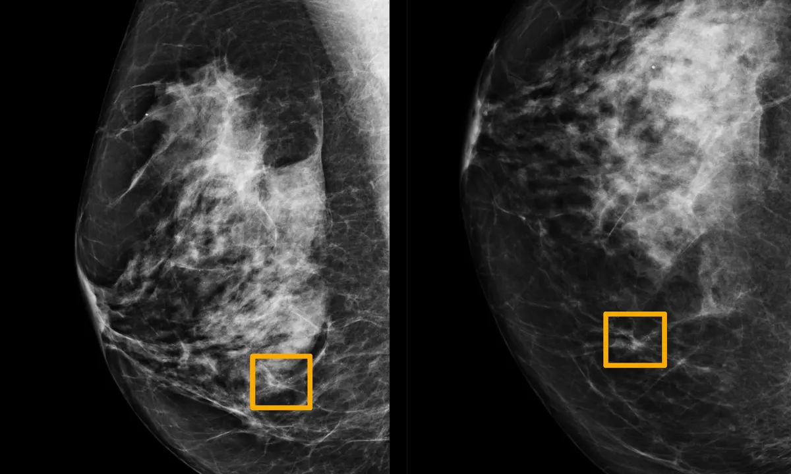

Project developed in lifex, a high-performance C++ Finite Element library used for cardiac applications. In this project I implemented and added to the library a non-Newtonian model in order to model blood viscosity, together with some other features to improve simulations of cardiovascular fluid mechanics in vessels.
The project, in collaboration with Humanitas Research Hospital, had the purpose of analyzing medical data coming from patients affected by Myelodisplastic Syndrome: a rare desease that can progress into Acute Myeloid Leukemia, had very high mortality and for which only cure is trasplantation. The goals were to investigate the effect of transplantation and identifying population with distinct risk profiles.


Investigation on a recently published method that combines Neural Network with Ordinary Differential Equation.

Modelling and implementation of a numerical model based on Discontinuos Galerkin method through a polyhedral mesh in order to solve an elastoplastic problem.

Different techniques for the implementation of Numerical Techniques to solve problems related to Molecular Modeling.
Implementation and training of a Neural Newtork to perform banknote detection.
Implementation of a Neural Network to predict how much a house will sell for, using UK government’s land registry data which contains all registered purchases since 1995.

Breast cancer classification project featuring eda, PCA, t-sne analysis and several classifiaction algorithms.